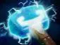
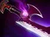

Shrapnel
обстреливает область, наносит урон и замедляет врагов. Полезен для контроля линии.

Мид — позиция 2
дальнобойный урон с безопасной позиции.
наносить урон издалека, защищать башни и заставлять врагов подходить к команде через опасную зону.
сосредоточься на добивании крипов и предметах на скорость атаки и урон. Всегда следи за мини-картой: Sniper легко убить при внезапном нападении.
обстреливает область, наносит урон и замедляет врагов. Полезен для контроля линии.
атаки могут нанести дополнительный урон и оттолкнуть противника.
увеличивает дальность атаки и помогает держать врагов на расстоянии.
дальнобойный выстрел по выбранной цели, удобен для добивания убегающих врагов.




